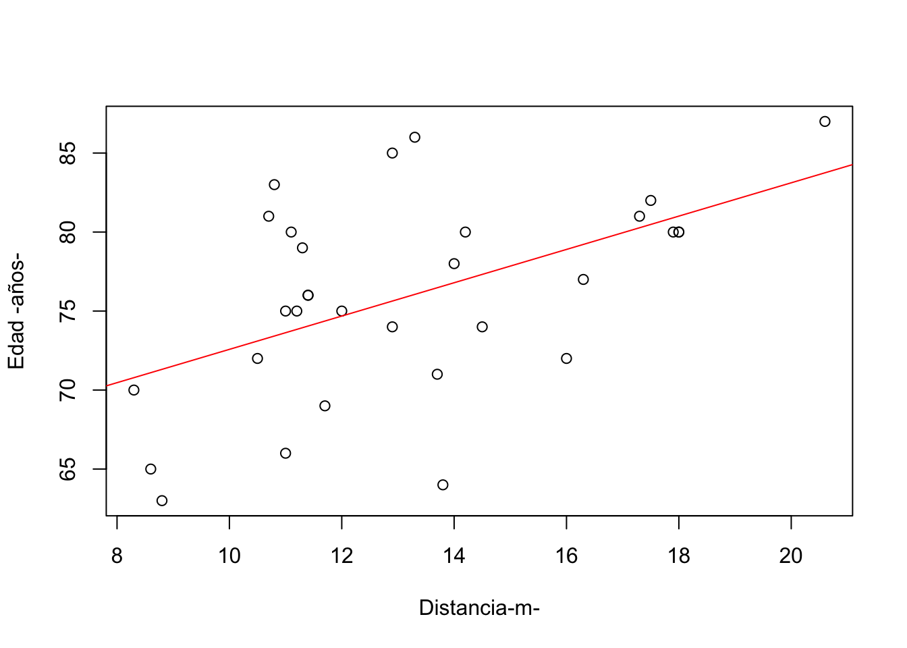

if (!require("tidyverse")) install.packages("tidyverse")
if (!require("tidymodels")) install.packages("tidymodels")
if (!require("here")) install.packages("here")
if (!require("rstatix")) install.packages("rstatix")
if (!require("infer")) install.packages("infer")
if(!require("MVN")) install.packages("MVN")
if(!require("psych")) install.packages("psych")
if(!require("permute")) install.packages("permute")
if(!require("lattice")) install.packages("lattice")
if(!require("vegan")) install.packages("vegan")
if(!require("sp")) install.packages("sp")
if(!require("maps")) install.packages("maps")
if(!require("shapefiles")) install.packages("shapefiles")
if(!require("foreign")) install.packages("foreign")
if(!require("fossil")) install.packages("fossil")Unidad III - Pruebas no paramétricas, Pruebas de correlación, Regresión lineal, Clúster, Análisis de Componentes principales (PCA)
Configuración
Estos son los paquetes de R que utilizaremos en esta sesión.
Pruebas no paramétricas
Las pruebas no paramétricas (conocidas como pruebas de distribución libre), son aquellas que se basan en determinadas hipótesis y no en suposiciones estrictas sobre la distribución de los datos, esto hace que sean útiles cuando los dastos no siguen una distribución normal o cuando las condiciones para las pruebas parámetricas no se cumplen (como varianzas homgéneas o datos medidos en escalas de intervalo o razón). Estas pruebas son más flexibles y se aplican a datos de cualquier tipo, como aquellos en escalas ordinales o nominales.
Algunas pruebas no paramétricas comunes incluyen:
Prueba de Mann-Whitney U: Se utiliza para comparar dos grupos independientes, similar a la prueba t de Student pero para datos no normales.
Prueba de Wilcoxon: Se usa para comparar dos muestras relacionadas o pareadas.
Prueba de Kruskal-Wallis: Es el equivalente no paramétrico del ANOVA, utilizado para comparar más de dos grupos independientes.
Prueba de chi-cuadrado: Se emplea para probar la asociación entre dos variables categóricas.
Coeficiente de correlación de Spearman: Mide la relación entre dos variables ordinales o no normalmente distribuidas.
Estas pruebas son útiles en casos donde los datos presentan sesgos, tienen outliers o cuando se trabaja con tamaños de muestra pequeños.
no_parametricos <-
readr::read_delim(
here::here(
"analisis-3",
"datos",
"datos_noparametricos.csv"
),
delim = ",",
col_names = TRUE
)Rows: 219 Columns: 2
── Column specification ────────────────────────────────────────────────────────
Delimiter: ","
chr (1): TRAT
dbl (1): HSUELO
ℹ Use `spec()` to retrieve the full column specification for this data.
ℹ Specify the column types or set `show_col_types = FALSE` to quiet this message. no_parametricos |>
dplyr::glimpse()Rows: 219
Columns: 2
$ TRAT <chr> "M", "M", "M", "M", "M", "M", "M", "M", "M", "M", "M", "M", "M"…
$ HSUELO <dbl> 0.2056, 0.2052, 0.2038, 0.2043, 0.2056, 0.2061, 0.2061, 0.2078,…#PROBAR NORMALIDAD Y HOMOGENEIDAD DE VARIANZAS
with(no_parametricos,tapply(HSUELO, TRAT,shapiro.test))$M
Shapiro-Wilk normality test
data: X[[i]]
W = 0.83387, p-value = 1.358e-07
$MF
Shapiro-Wilk normality test
data: X[[i]]
W = 0.86916, p-value = 1.904e-06
$MFC
Shapiro-Wilk normality test
data: X[[i]]
W = 0.25615, p-value < 2.2e-16
Nota
No hay normalidad en los datos, porque p<0.05
no_parametricos# A tibble: 219 × 2
TRAT HSUELO
<chr> <dbl>
1 M 0.206
2 M 0.205
3 M 0.204
4 M 0.204
5 M 0.206
6 M 0.206
7 M 0.206
8 M 0.208
9 M 0.208
10 M 0.21
# ℹ 209 more rowstestle <- no_parametricos
testle <-
testle |>
dplyr::mutate(
TRAT = forcats::as_factor(TRAT)
)
testle |>
rstatix::levene_test(
HSUELO ~ TRAT
)# A tibble: 1 × 4
df1 df2 statistic p
<int> <int> <dbl> <dbl>
1 2 216 25.5 1.12e-10
Nota
Como p<0.05, no cumple con el supuesto de hpomogeneidad de varianza, por esto no se puede realizar estadística paramétrica; así se considera trabajar más buen un modelo no paramétrico.
Dado que no hay normalidad ni homogeneidad de varianza, no se puede realiar un ANOVA, por lo que se realiza su equivalente no parametrico.
kruskal.test(HSUELO~TRAT, data=no_parametricos)
Kruskal-Wallis rank sum test
data: HSUELO by TRAT
Kruskal-Wallis chi-squared = 193.94, df = 2, p-value < 2.2e-16
Nota
Si p<0.05 hay diferencia significativa (se reporta como KW=193.94; P<0.05)
Dado que hay diferencias significativas, se requiere saber quien difiere de quien, por lo que se realiza una prueba post hoc
pairwise.wilcox.test(no_parametricos$HSUELO,no_parametricos$TRAT,
p.adjust.method = "bonferroni",
paired = FALSE)
Pairwise comparisons using Wilcoxon rank sum test with continuity correction
data: no_parametricos$HSUELO and no_parametricos$TRAT
M MF
MF <2e-16 -
MFC <2e-16 <2e-16
P value adjustment method: bonferroni
Nota
Se encuentra que la humedad en el suelo es significativamente diferente entre tipos de manejo tradicional en el cultivo de maiz (KW= 193.94; P<0.05); el manejo MFC tiene mayor humedad y el monocultivo (M) tiene la menor humedad donde la humedad del suelo, fue hasta un 40% mayor en la combinacion MFC, respeto al M (0.33+-0.007 y 0.19 +-0.0013 respectivamente)
Pruebas de correlación.
Las pruebas de correlación, existen tanto versiones paramétricas como no paramétricas, dependiendo de los supuestos que se cumplen en los datos.
Pruebas paramétricas de correlación
Coeficiente de correlación de Pearson: Se utiliza para medir la relación lineal entre dos variables continuas.
Supuestos:
Las dos variables deben de seguir una distribución normal
La relación deben de ser lineales
Las variables deben medirse en escalas de intervalo o razón.
Tener en cuenta que: Los valores de correlación: van de 1 a -1, donde 1 es una relación de correlación perfecta, y -1 es una correlación negativa perfecta y, 0 indica que no hay una relación lineal.
Nota
¿Qué se observará en estos datos?
Se quiere conocer si las personas que hablan maya en mayor proporcion
Si conversan la tradicion de techar sus casas con la palma de huano, y si esto a su vez se relaciona con la cantidad de plantas que tienen en sus huertos familiares.
Se quiere saber como se correlacionan estas variables
correlacion <-
readr::read_delim(
here::here(
"analisis-3",
"datos",
"datos_correlacion1.csv"
),
delim = ";",
col_names = TRUE
)Rows: 54 Columns: 3
── Column specification ────────────────────────────────────────────────────────
Delimiter: ";"
dbl (3): Demanda, Habla, Palmas
ℹ Use `spec()` to retrieve the full column specification for this data.
ℹ Specify the column types or set `show_col_types = FALSE` to quiet this message. correlacion |>
dplyr::glimpse()Rows: 54
Columns: 3
$ Demanda <dbl> 75, 75, 75, 75, 75, 75, 75, 75, 75, 75, 70, 70, 70, 70, 70, …
$ Habla <dbl> 50, 50, 50, 50, 50, 55, 55, 55, 60, 55, 65, 65, 65, 60, 60, …
$ `Palmas ` <dbl> 15, 13, 15, 15, 15, 15, 16, 14, 15, 15, 14, 14, 12, 14, 13, …###Probar la normalidad de los datos
Normalidad_palmas<-mvn(data=correlacion,
univariateTest = "SW", desc=TRUE)
Normalidad_palmas$multivariateNormality
Test HZ p value MVN
1 Henze-Zirkler 1.27588 0.001005638 NO
$univariateNormality
Test Variable Statistic p value Normality
1 Shapiro-Wilk Demanda 0.9705 0.2035 YES
2 Shapiro-Wilk Habla 0.9760 0.3478 YES
3 Shapiro-Wilk Palmas 0.9869 0.8175 YES
$Descriptives
n Mean Std.Dev Median Min Max 25th 75th Skew Kurtosis
Demanda 54 74.62963 13.241297 75 50 100 65 83.75 0.06642742 -0.6975179
Habla 54 62.40741 16.418488 60 30 100 50 73.75 0.19691599 -0.5711677
Palmas 54 14.79630 2.916315 15 8 22 13 17.00 0.05444429 -0.4336614str(correlacion)spc_tbl_ [54 × 3] (S3: spec_tbl_df/tbl_df/tbl/data.frame)
$ Demanda: num [1:54] 75 75 75 75 75 75 75 75 75 75 ...
$ Habla : num [1:54] 50 50 50 50 50 55 55 55 60 55 ...
$ Palmas : num [1:54] 15 13 15 15 15 15 16 14 15 15 ...
- attr(*, "spec")=
.. cols(
.. Demanda = col_double(),
.. Habla = col_double(),
.. `Palmas ` = col_double()
.. )
- attr(*, "problems")=<externalptr> ###Se hace la correlación
Cor_Palmas<-psych::corr.test(correlacion,method = "pearson")
Cor_PalmasCall:psych::corr.test(x = correlacion, method = "pearson")
Correlation matrix
Demanda Habla Palmas
Demanda 1.00 0.91 0.97
Habla 0.91 1.00 0.90
Palmas 0.97 0.90 1.00
Sample Size
[1] 54
Probability values (Entries above the diagonal are adjusted for multiple tests.)
Demanda Habla Palmas
Demanda 0 0 0
Habla 0 0 0
Palmas 0 0 0
To see confidence intervals of the correlations, print with the short=FALSE optioncor.test(correlacion$Demanda,correlacion$Habla)
Pearson's product-moment correlation
data: correlacion$Demanda and correlacion$Habla
t = 15.941, df = 52, p-value < 2.2e-16
alternative hypothesis: true correlation is not equal to 0
95 percent confidence interval:
0.8509535 0.9476791
sample estimates:
cor
0.9111149 ##exportar tabla de correlacionn
Tabla<-cor(correlacion,method = "pearson")
write.csv(Tabla,file="Correlacion pearson.csv")
Nota
¿Qué se puede concluir con los resultados?
A traves del analisis de correlacion se encontro que la conservacion de la lengua maya (mayor % hablado) tiene una alta correlacion
Tanto con el porcentaje de la vivienda techada con la palma (r=0.91; P=0.05) como el numero de palmas que el entrevistado posee en su huerto familiar r=0.97; p<0.05) por tanto, se puede inferir que la conservacion en la traduccion de techar viviendas con palma de huano. Lo anterior implica mantener un suministro de la palma, por lo que las personas las estableen en sus huertos famiiar.
Esto último puede contribuir a la conservacion sustentable de las especies
Pruebas no paramétricas de correlación
- Coeficiente de correlación de Spearman: Se utiliza cuando los datos no cumplen con supuestos de normalidad o cuando la relación entre las variables puede no ser líneal, pero las variables aumentan o disminuyen juntas.
Este coeficiente también se puede aplicar cuando los datos no asumen una distribución específica, a la vez se basa en rangos de datos (no en sus valores originales).
Tener en cuenta que: Al igual que Pearson, va de -1 a 1, donde los extremos indican correlaciones perfectas y 0 indica ausencia de correlación.
- Coeficiente de correlación de Kendall (Tau de Kendall): Esta prueba mide la relación entre dos variables ordinales o continuas. Normalmente utiliza el concepto de pares cocordantes o discordantes para calcular la correlación, en lugar de depender de los rangos como en Spearman.
Tener en cuenta que: Va de -1 a 1, con los mismos significados que en Spearman.
Diferencias clave entre Pearson y Spearman/Kendall
Pearson se utiliza cuando las variables son continuas y normalmente distribuidas, y la relación entre ellas es lineal.
Spearman y Kendall se aplican cuando los datos no son normales, hay relaciones no lineales (pero monótonas), o se trabaja con variables ordinales o con datos que contienen empates.
Nota
Ejemplo de leña, como se correlaciona la edad de 21 mujeres de Kenya con la cantidad de leña de colectan y el número de especies que conocen para este uso
correlacion2 <-
readr::read_delim(
here::here(
"analisis-3",
"datos",
"datos_correlacion2.csv"
),
delim = ";",
col_names = TRUE
)Rows: 21 Columns: 3
── Column specification ────────────────────────────────────────────────────────
Delimiter: ";"
dbl (3): Edad, Lena, Especies
ℹ Use `spec()` to retrieve the full column specification for this data.
ℹ Specify the column types or set `show_col_types = FALSE` to quiet this message.str(correlacion2)spc_tbl_ [21 × 3] (S3: spec_tbl_df/tbl_df/tbl/data.frame)
$ Edad : num [1:21] 40 41 50 44 38 28 50 55 30 51 ...
$ Lena : num [1:21] 53 51 51 71 51 40 44 41 37 45 ...
$ Especies: num [1:21] 7 7 9 7 6 5 9 10 6 9 ...
- attr(*, "spec")=
.. cols(
.. Edad = col_double(),
.. Lena = col_double(),
.. Especies = col_double()
.. )
- attr(*, "problems")=<externalptr> correlacion2 |>
dplyr::glimpse()Rows: 21
Columns: 3
$ Edad <dbl> 40, 41, 50, 44, 38, 28, 50, 55, 30, 51, 38, 44, 28, 29, 45, 7…
$ Lena <dbl> 53, 51, 51, 71, 51, 40, 44, 41, 37, 45, 40, 38, 53, 40, 60, 5…
$ Especies <dbl> 7, 7, 9, 7, 6, 5, 9, 10, 6, 9, 5, 7, 5, 5, 7, 10, 10, 9, 11, …### probar la normalidad
Normalidad_lena<-mvn(data = correlacion2, univariateTest =
"SW", desc =F)
Normalidad_lena$multivariateNormality
Test HZ p value MVN
1 Henze-Zirkler 0.8338054 0.05073122 YES
$univariateNormality
Test Variable Statistic p value Normality
1 Shapiro-Wilk Edad 0.9501 0.3429 YES
2 Shapiro-Wilk Lena 0.8790 0.0140 NO
3 Shapiro-Wilk Especies 0.8956 0.0288 NO ###como los datos no son normales, lo mas recomendable es hacer una prueba no parametrica
cor_lena<-psych::corr.test(correlacion2,method="spearman")
cor_lenaCall:psych::corr.test(x = correlacion2, method = "spearman")
Correlation matrix
Edad Lena Especies
Edad 1.00 -0.07 0.97
Lena -0.07 1.00 -0.07
Especies 0.97 -0.07 1.00
Sample Size
[1] 21
Probability values (Entries above the diagonal are adjusted for multiple tests.)
Edad Lena Especies
Edad 0.00 1.00 0
Lena 0.77 0.00 1
Especies 0.00 0.76 0
To see confidence intervals of the correlations, print with the short=FALSE option##exportar tabla
Tabla2<-cor(correlacion2,method = "spearman")
write.csv(Tabla2,file = "correlacion2 spearman.csv")
Nota
Se evidencia una correlación entre la edad y el numero de especies, pero no lo hay entre la edad y la leña
Entre el valor de la correlación sea más cercano a 1 , hay mayor correlacion (valores cercanos a 0, no hay correlación)
Los datos que evidencian un valor de p<0.05 representan una correlación significativa (en la segunda tabla)
Regresión lineal
La regresión lineal es una técnica de análisis de datos que predice el valor de datos desconocidos mediante el uso de otro valor de datos relacionado y conocido. Modela matemáticamente la variable desconocida o dependiente y la variable conocida o independiente como una ecuación lineal. Los científicos de muchos campos, incluidas la biología y las ciencias del comportamiento, ambientales y sociales, utilizan la regresión lineal para realizar análisis de datos preliminares y predecir tendencias futuras
Por ejemplo:
Para el caso que se va a evaluar, se tienen dos columnas, una de la distancia de la planta a la casa del informante y la otra la edad del informante. Se quiere conocer si existe una posible relación entre las variables, donde el informante de acuerdo a su edad, tiene las plantas más cerca a su hogar.
regre <-
readr::read_delim(
here::here(
"analisis-3",
"datos",
"datos_regresion.csv"
),
delim = ";",
col_names = T
)Rows: 31 Columns: 2
── Column specification ────────────────────────────────────────────────────────
Delimiter: ";"
dbl (2): Distancia, Edad
ℹ Use `spec()` to retrieve the full column specification for this data.
ℹ Specify the column types or set `show_col_types = FALSE` to quiet this message. regre|>
dplyr::glimpse()Rows: 31
Columns: 2
$ Distancia <dbl> 8.3, 8.6, 8.8, 10.5, 10.7, 10.8, 11.0, 11.0, 11.1, 11.2, 11.…
$ Edad <dbl> 70, 65, 63, 72, 81, 83, 66, 75, 80, 75, 79, 76, 76, 69, 75, …regre# A tibble: 31 × 2
Distancia Edad
<dbl> <dbl>
1 8.3 70
2 8.6 65
3 8.8 63
4 10.5 72
5 10.7 81
6 10.8 83
7 11 66
8 11 75
9 11.1 80
10 11.2 75
# ℹ 21 more rows###Probar la normalidad
Normalidad_regre<-mvn(data=regre,univariateTest = "SW",
des= F)
Normalidad_regre$multivariateNormality
Test HZ p value MVN
1 Henze-Zirkler 0.6636803 0.1274906 YES
$univariateNormality
Test Variable Statistic p value Normality
1 Shapiro-Wilk Distancia 0.9412 0.0889 YES
2 Shapiro-Wilk Edad 0.9655 0.4034 YES ###Corremos la regresion
Reg_Edad<-lm(Edad~Distancia,data=regre)
Reg_Edad
Call:
lm(formula = Edad ~ Distancia, data = regre)
Coefficients:
(Intercept) Distancia
62.031 1.054 summary(Reg_Edad)
Call:
lm(formula = Edad ~ Distancia, data = regre)
Residuals:
Min 1Q Median 3Q Max
-12.5816 -2.7686 0.3163 2.4728 9.9456
Coefficients:
Estimate Std. Error t value Pr(>|t|)
(Intercept) 62.0313 4.3833 14.152 1.49e-14 ***
Distancia 1.0544 0.3222 3.272 0.00276 **
---
Signif. codes: 0 '***' 0.001 '**' 0.01 '*' 0.05 '.' 0.1 ' ' 1
Residual standard error: 5.538 on 29 degrees of freedom
Multiple R-squared: 0.2697, Adjusted R-squared: 0.2445
F-statistic: 10.71 on 1 and 29 DF, p-value: 0.002758
Nota
Aunque el valor p < 0.05; el valor Rsquared solo representa el 0.24 (24%) (no hay regresión lineal, sino una tendencia), por ende es bajo y no explica como la distancia puede tener una incidencia en el número de plantas. La idea es que r-squared sea cercano al valor 1 y en terminos de % mayor a 50%.
Ahora se grafica
plot (regre$Distancia,regre$Edad,
xlab = "Distancia-m-",ylab="Edad -años-")
##Agregar la linea de regresion
abline(Reg_Edad,col="red")
Análisis de Componentes principales (PCA)
El análisis de componentes principales (principal component analysis) o PCA es una de las técnicas de aprendizaje no supervisado, las cuales suelen aplicarse como parte del análisis exploratorio de los datos. A diferencia de los métodos de aprendizaje supervisado, donde contamos con un grupo de variables o características (𝑋=𝑋1,𝑋2,…,𝑋𝑝) medidas sobre un conjunto de observaciones 𝑛, con la intención de obtener predicciones sobre una variable respuesta 𝑦 asociada, en los no supervisados solo contamos con un número de variables de las cuales nos interesa conocer o de las que queremos extraer información, por ejemplo, sobre la existencia de subgrupos entre las variables u observaciones.
Una de las aplicaciones de PCA es la reducción de dimensionalidad (variables), perdiendo la menor cantidad de información (varianza) posible: cuando contamos con un gran número de variables cuantitativas posiblemente correlacionadas (indicativo de existencia de información redundante), PCA permite reducirlas a un número menor de variables transformadas (componentes principales) que expliquen gran parte de la variabilidad en los datos. Cada dimensión o componente principal generada por PCA será una combinación lineal de las variables originales, y serán además independientes o no correlacionadas entre sí. Las componentes principales generadas pueden utilizarse a su vez en métodos de aprendizaje supervisado, como regresión de componentes principales o partial least squares.
El PCA también sirve como herramienta para la visualización de datos: supóngase que quisiéramos representar 𝑛 observaciones con medidas sobre 𝑝 variables (𝑋=𝑋1,𝑋2,…,𝑋𝑝) como parte de un análisis exploratorio de los datos. Lo que podríamos hacer es examinar representaciones bidimensionales, sin embargo, existen un total de (𝑝2)=𝑝(𝑝−1)/2 posibles representaciones entre pares de variables, y si el número de variables es muy alto, estas representaciones se harían inviables, además de que posiblemente la información contenida en cada una sería solo una pequeña fracción de la información total contenida en los datos.
El PCA puede considerarse como una rotación de los ejes del sistema de coordenadas de las variables originales a nuevos ejes ortogonales, de manera que estos ejes coincidan con la dirección de máxima varianza de los datos.
NOTA: El PCA no requiere la suposición de normalidad multivariante de los datos.
Se calcula el % entre el valor del PC y el valor total que aparece en la tabal,
esto se hace para el primer dato y el segundo (puesto que son el primer y segundo eje)
El PC1 explica que el 47.5% de la varianza y el PC2 explica el 22.9%, la sumatoria de ambos.
NOTA: Debería de dar por encima del 55% para que sea significativo
Si se encuentra una U en erradura en cualqueir caso en la gráfica (en este caso es con las S), y los datos no son lineales, quiere decir que el PCA no sirve. Los datos no cumplen con el supuesto de la multiinealidad y la multi normalidad
SE DEBE DE PROBAR OTROS MODELOS
Referencias bibliograficas
https://bookdown.org/jsalinas/tecnicas_multivariadas/cluster.html